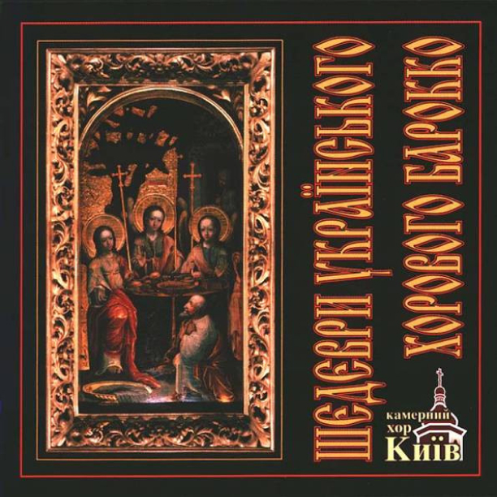

Шедеври Українського Хорового Барокко
- Реліз: Караван CD – ACD 010, Спалах Ltd. – none
- Випущено: 1996
Трекліст:
- Єдинородний сине приідіте, поклонімся
- Вошел єси во церков
- Не отвержи мене во время старості
- Блажені яко ізбрал
- Святий Боже
- Господи, кто обітаєт в жилищі твоїм
- Достойно єсть
- Да ісправиться молитва моя
- Гласом моїм
- Да ісполнятся уста наша
- Господи, Боже мой, на тя уповах
Загальний час звучання : 58:17
Про альбом
На цьому компакт-диску представлені 11 хорових творів, які по праву можуть бути названі шедеврами українського хорового бароко. Духовна музика доби бароко становить найвище надбання української музичної спадщини, що відбиває могутнє відродження творчих сил українського народу, яким позначена культура кінця 17-го – першої половини 18-го століття. Це була епоха глибинних змін усієї системи музичного мислення, зміни творчих принципів, оновлення форм, стилів, жанрів.
Камерний хор "Київ" розпочинає програму духовними творами свого співвітчизника, киянина, Миколи Дилецького. Творчість цього композитора, класика партесного, тобто багатоголосного, стилю нещодавно відкрита і ще мало відома широкому колу слухачів. М. Дилецькому належить перший трактат з проблем музичної теорії, естетики, композиції; він є автором кількох Літургій та хорових концертів. В його музиці втілились найважливіші ознаки європейського бароко з синтезом потужних національних традицій..." Доктор мистецтвознавства, академік, професор Н. Герасимова-Персидська